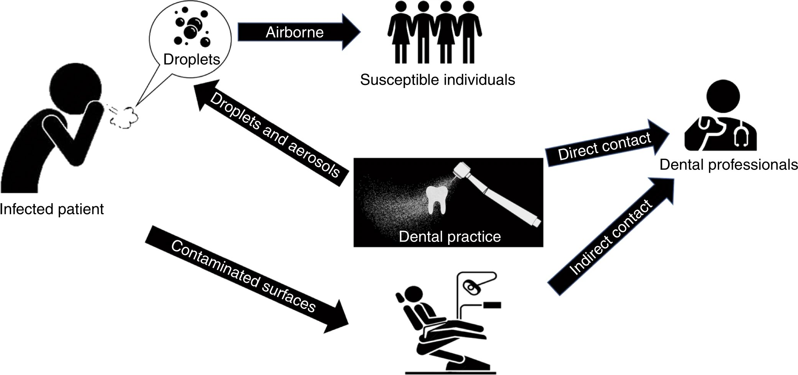
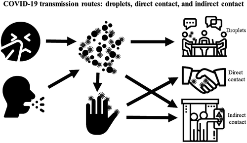
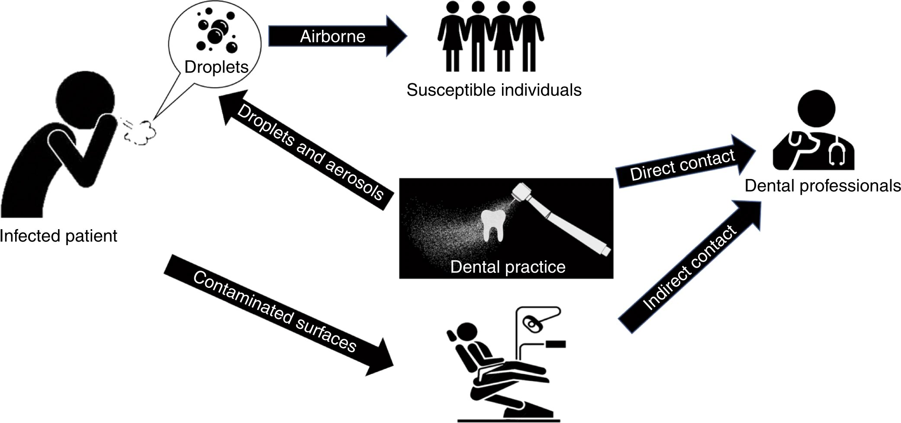
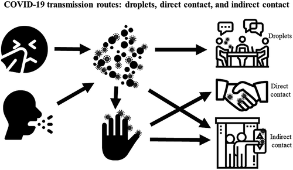

COVID-19 virus is primarily transmitted between people through respiratory droplets and contact routes.. Droplet transmission occurs when a person is in in close contact (within 1 m) with someone who has respiratory symptoms (e.g., coughing or sneezing) and is therefore at risk of having his/her mucosae (mouth and nose) or conjunctiva (eyes) exposed to potentially infective respiratory droplets. Transmission may also occur through fomites in the immediate environment around the infected person. Therefore, transmission of the COVID-19 virus can occur by direct contact with infected people and indirect contact with surfaces in the immediate environment or with objects used on the infected person (e.g., stethoscope or thermometer).
Airborne transmission is different from droplet transmission as it refers to the presence of microbes within droplet nuclei, which are generally considered to be particles 5μm in diameter, can remain in the air for long periods of time and be transmitted to others over distances greater than 1 m. In the context of COVID-19, airborne transmission may be possible in specific circumstances and settings in which procedures or support treatments that generate aerosols are performed; i.e., endotracheal intubation, bronchoscopy, open suctioning, administration of nebulized treatment, manual ventilation before intubation, turning the patient to the prone position, disconnecting the patient from the ventilator, non-invasive positive-pressure ventilation, tracheostomy, and cardiopulmonary resuscitation.
 


